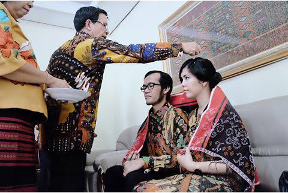
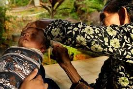
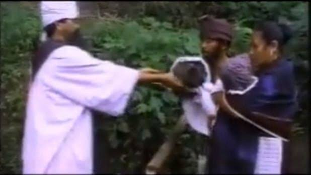

Ritual adat Batak Toba
Kehidupan Masyarakat Batak adalah kehidupan yang sangat menjunjung tinggi adatnya. Masyarakat Batak bahkan sebelum lahir ke dunia pun (masih dalam kandungan) sudah melakoni adat sampai seorang Batak tersebut meninggal dan menjadi tulang-belulang masih ada serangkaian adat. Ini bukan menunjukkan rumitnya Batak dan adatnya, ini menunjukkan bahwa Dalihan Natolu (Somba marhula-hula, Elek marboru, Manat mardongan tubu) selalu ditunjukkan dengan perayaan serta syukuran dan Adat digunakan sebagai pertanda.
somba marhula-hula:menghormati pihak hula hula dengan memberikan makanan daging berupa daging sapi,kerbau,kambing,babi yang diolah tapi bagian bagian tertentu seperti kepala,leher,dada,paha,ekor disusun dalam suatu wadah atau pinggan.
Elek marboru: memberikan ulos atau ikan mas atau ihan kepada pihak bere.misalnya ketika pihak boru sakit maka biasanya pihak bere akan dikasih ikan mas yang dicampur jeruk purut ditambah sagu dan ditambah gula dan kelapa gongseng atau disebut juga mangupa upa.
Manat mardongan:suatu keturuanan yang mengatur pada garis laki laki dalam satu marga
Beberapa ritual adat batak toba :
- Upacara adat Mangirdak atau Mangganje atau Mambosuri boru (adat tujuh bulanan) 
- Upacara adat Mangharoan
- Upacara adat Martutu aek
Upacara adat mangharoan (dibaca:Makkaroan) adalah upacara adat yang dilaksanakan setelah dua minggu kelahiran bayi untuk menyambut kedatangan bayi tersebut dalam keluarga tersebut.
Upacara adat martutu aek adalah upacara adat pemberian nama kepada bayi. Namun, padasaat ini, upacara ini sudah tidak dilakukan lagi karena dianggap tidak sesuai dengan ajaran agama.Biasanya bagi HKBB disebut tardidi atau pemberian nama,bagi karismatik disebut pentakosta.
